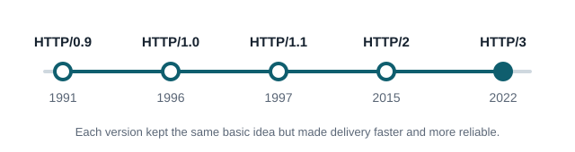

IT 3203 Research Project
The Evolution of HTTP
How the protocol behind every web page grew from a one line request in 1991 into the fast, encrypted system that runs the modern internet.
A simple HTTP exchange
Request from the browser: GET /index.html HTTP/1.1 Host: www.example.com Response from the server: HTTP/1.1 200 OK Content-Type: text/html
1991
First version, HTTP/0.9
5
Major versions released
443
Default port for HTTPS
2022
HTTP/3 becomes a standard
Abstract
What this research covers
The Hypertext Transfer Protocol (HTTP) is the set of rules browsers and servers use to exchange web pages, images, and data. It started in 1991 as a one line request for a plain text page. Since then it has gone through several major versions: HTTP/1.0, HTTP/1.1, HTTP/2, and HTTP/3. Each version solved problems with speed, reliability, or security as the web grew. This site explains how HTTP works, how each version changed it, and why HTTPS is now the normal way to browse.
Table of Contents
Explore the topics
-
01
How HTTP Works
Requests, responses, methods, and status codes.
-
02
HTTP Versions
The path from HTTP/0.9 to HTTP/3.
-
03
HTTPS and Security
How encryption protects web traffic.
-
04
Key Concepts
Seven core ideas, explained simply.
-
05
References
Sources and learning resources.
-
06
About
The author and this project.
Key Terms
Words you will see on this site
- HTTP
- HTTPS
- Client
- Server
- Request
- Response
- Status Code
- Header
- TLS
- Multiplexing
- QUIC
